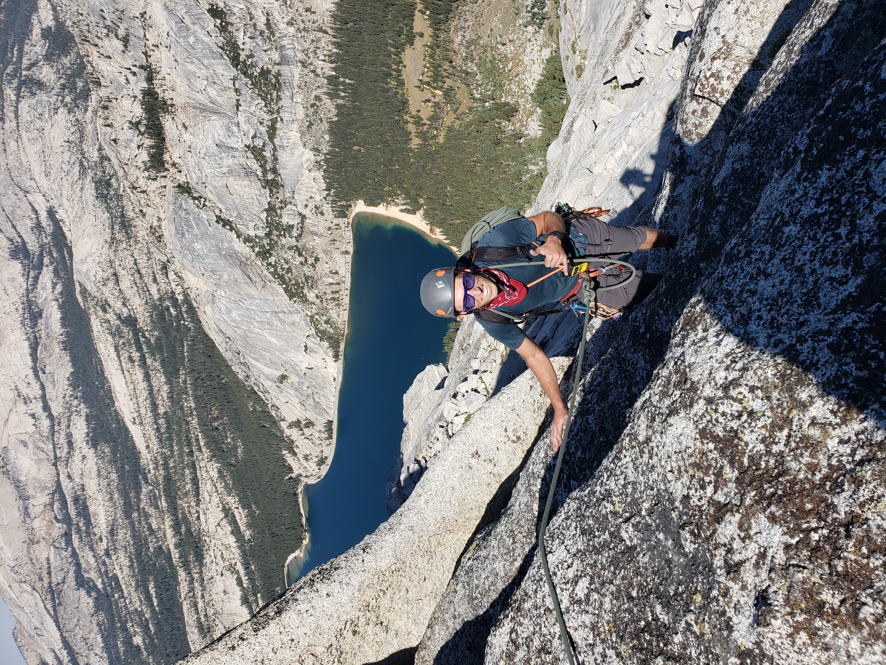
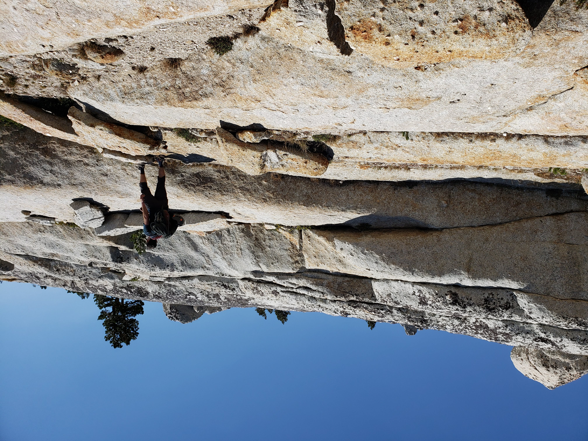
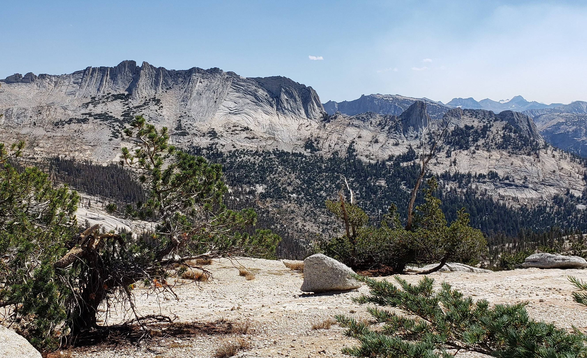
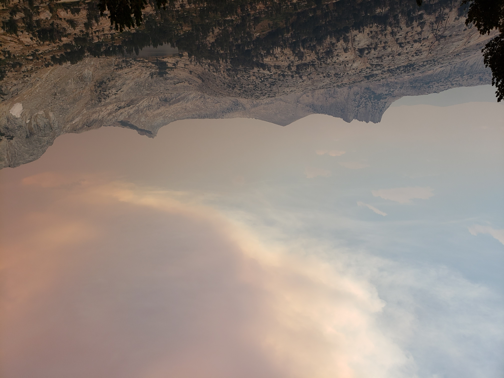
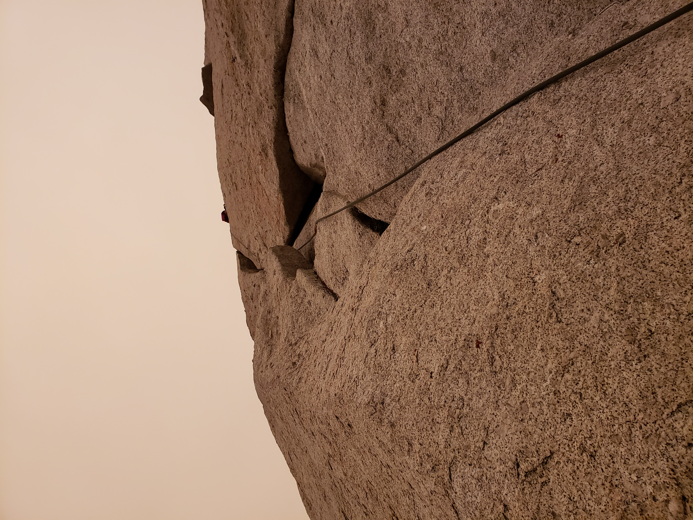
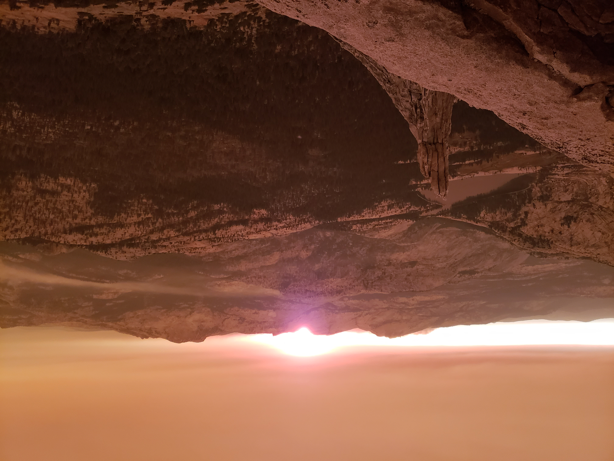

Jacob has for years held aspirations of doing the Tuolumne Triple Crown—an ascent of Tenaya Peak, Matthes Crest, and Cathedral Peak in a day. For strong climbers, 95+% of the climbing can be easily soloed, but I am neither a particularlystrong climber, nor do I prefer to free solo. Any attempt at triple crowning for us would have to be insanely efficient and we would need to have the routes dialed. This was more of an exploratory adventure for us than a serious attempt. We drove up on Friday and had just enough time to run up the Hermphrodite Flake by Tenaya Lake before sunset, a short 4-pitch 5.7 with no approach situated or the north side of Tenaya Lake.
Jacob had attempted to solo Tenaya some years earlier and ended up gratefully accepting a belay from another party near the top, where the route noticeably steepens. This is a highly asthetic route that ascends an obvious line rising up from Tenaya Lake. The Sisyphean face is accessed from a climbers trail the goes around the back of the lake and climbs steeply up the forested hillside. Eventually, slabby granite gradually takes up a greater and greater share of the landscape, and walking up the slab seems to be the choice. You continue up the easy slab, which imperceptibly steepens, boiling the frog, until all of a sudden you realize you’re on 5th class terrain and you might want to rope up.
The protection is sparse in places, but does not feel super necessary. The moves are all quite easy, but an unroped fall would be very bad. The final couple of ropelengths to the summit get a little tougher, requiring some crack moves.

We took a quick hydration break and snack on the summit and then descended down the back side. Matthes Crest loomed far in the distance, and even though the cross country terrain was pretty manageable, it was clear that we would not have time for the triple. We opted to cut out Matthes and leave it for another day and head directly to Cathedral.


There was a conga line going up Cathedral, as well as a lengthy line at the base. We ended up waiting about 2 hours to get on the route. The first few pitches are a “choose your own adventure” that enables parties to easily pass, but the variations eventually converge for the last couple of pitches, and so bottlenecks can form high up on the peak. Climbing the first few pitches is an overwhelming decision paralysis. There are dozens of lines that seem like they can go, but many of them eventually end up on harder terrain if you’re not careful. I, of course, ended up on one of those variations that was actually quite spooky.


About halfway up the route, a cloud appeared in the distance. This was, in fact, the smoke plume from the Caldor Fire. We watched as it slowly moved across the sky, blotting out the sun and bathing the entire Tuolumne area in an eerie orange glow. The smoke thankfully remained mostly aloft, so our lungs were saved.
The chaos at the top of the peak made for some incredibly slow going. We only spent a few short moments at the top before beginning the descent, as we were losing light fast. Our start from Tenaya Lake meant that we had a different descent route from everyone else on the peak. We cautiously navigated some death slabs, opting for a final rappel in the failing light to get off the last of the technical terrain. The smoke meant that once the sun set darkness came incredibly quickly, and there would be no moon or stars.

The descent back to the Tenaya Lake lot is almost all off trail and descends a series of water-scoured slabs. At this point it was pitch black and raining ash. I discovered that my headlamp battery had died, and so we were left to work from Jacob’s barely-functioning cheapo headlamp. In the daylight, this descent would be fairly trivial; you simply choose the slabs that don’t cliff you out. But we had no way of telling what was ahead of us once we started down a slabby ramp, as we could only see a few feet in front of us. Some paths cliffed out, some were trivial. Lots of false starts, and lots of needless fear on benign steps; we were very slow. We finally made it back to the car around midnight, with about a quarter inch of ash coating everything.